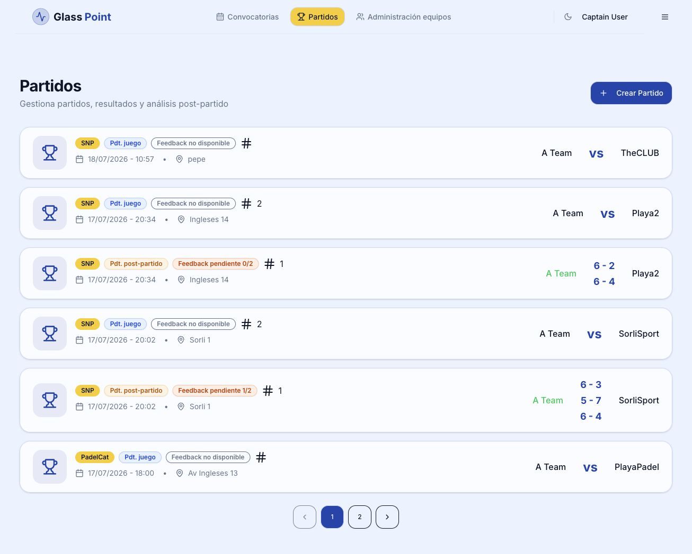

Landing / raiz
/
Sin sesion muestra landing. Con sesion entra en el resolver de rol y redirige al dashboard adecuado.
auto-rolesesion
Esquema visual actualizado con las pantallas actuales, la separacion entre Convocatorias y Partidos, los dashboards por rol y los cambios de estado que gobiernan convocatorias, partidos y formularios postpartido.
/
Sin sesion muestra landing. Con sesion entra en el resolver de rol y redirige al dashboard adecuado.
/login-jugador
Entrada principal con Google o flujo de autenticacion de jugador.
/login-clasico
Entrada con email y password para pruebas y usuarios locales.
/registro-jugador /player/register
Alta con club obligatorio, mano dominante y posicion natural en pista.
AppContent
Admin va a /admin, coordinador a /coordinator, capitan a /captain, coach a /players y jugador a /player/dashboard.
/player/dashboard
Inicio del jugador: cards de nivel, arquetipo, partidos, liga/equipo y convocatorias pendientes.
/player/profile
Datos personales, mano dominante, posicion, arquetipo, partidos y equipos.
/player/questionnaire /forms/autoeval /forms/autoeval/edit
Formulario dinamico activo para autoevaluacion.
/formulario/postpartido/:playerId
Formulario dinamico de feedback postpartido. Se habilita cuando el partido esta en pdtPostPartido.
/dashboard/players/:id/postpartidos/:ppId
Consulta historica del feedback guardado.
/PanelEntrenamiento /dashboard/players/:id
Panel de entrenamiento y ficha analitica de jugador.
/callups
Punto de menu horizontal. Filtros por torneo/competicion y equipo; orden por fecha/jornada.
/callups/new
Alta por capitan/gestion con torneo, objetivo, minimo de jugadoras, club rival y direccion de juego.
/callups/:id/availability
Roster de convocatoria. El capitan puede cambiar confirmada/pendiente/baja y revisar score, mano, posicion y partidos.
/callups/:callUpId/lineup
Disponible solo cuando hay quorum. Genera o selecciona propuesta.
/lineups/proposals/:proposalId/edit /lineup/proposal/:proposalId/detail
Edicion antes de crear partidos. El detalle muestra pistas, score de pista, compatibilidad y acceso a resultado.
/matches /matches/:id
Punto de menu horizontal. Lista resultados, estado de partido y pendiente/completo de postpartido.
/captain
Vista del equipo en horizontal, edicion de score torneo y resumen de jugados/ganados/perdidos.
/players
Listado para coach y capitan. Coach filtra por club; capitan por club y equipo.
/players/:id /dashboard/players/:id
Ficha de jugador, evaluaciones, arquetipo y resumen deportivo.
/dashboard/players/:id/coach-evals/new/edit
/dashboard/players/:id/coach-evals/:evalId/edit
/dashboard/players/:id/coach-evals/:evalId
Formulario dinamico de coach con misma experiencia que autoevaluacion.
/coordinator
Primera pantalla del coordinador de club. Gestion de club, equipos y usuarios.
/admin /formsAdmin /admin/form-version-questions
Usuarios, clubs/equipos y gestion de formularios versionados.
La convocatoria empieza con asistencia pendiente y se bloquea progresivamente cuando se crea la alineacion, se registran resultados y se abre/cierra el postpartido.
El listado de partidos muestra el resultado si existe y traduce el estado tecnico a una lectura operativa.
/matches/:id desde la pista para anotar resultado./callups. Alta, filtros, estado y acceso a plantilla/alineacion./matches. Resultados, estado de partido y postpartido pendiente./captain, /coordinator o /admin./compatibilidad. Disponible para todos los roles autenticados./arquetipos. Disponible para todos los roles autenticados.
Abrir captura